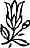

Sevgili Bhagwan,
'Tanrı Baba' kavramı yararlı bir kavram mı?
Dinlerin tanrıyı ‘baba' diye adlandırmaları tesadüf değildir. Bunlar psikolojik yönden hasta insanların fikirleridir. Hıristiyanlar rahiplerine 'baba' derler. Tanrıyı baba diye adlandıran bu dinler, rahiplerini baba diye adlandıran bu dinler -patolojinizden, hastalığınızdan kurtulmanıza yardım edeceklerine sizin daha patolojik, daha hasta olmanıza yardım ederler. Onların tüm işi sizin hastalığınıza bağlıdır.
Evli bile olmayan tanrıya baba denmesi çok tuhaf; evli bile olmayan, çocukları bile olmayan rahiplere baba denmesi çok tuhaf. Fakat bunlara baba deniliyor, çünkü şu ya da bu gün herkes babasını özler; o zaman onlar bunun yerini alacak. Onlar vekil babalardır, fakat ölümlüdürler de, bir gün ölebilirler. Papa bile her an göçebilir. Böylece dinler ebedi bir baba yarattılar -en azından tanrı her zaman yanınızda kalacak. Ve tüm dinler tanrıyı her yerde mevcut olarak tanımlarlar; güçlü -her şeye gücü yeten; bilen -her şeyi bilen.
Kapalı bir banyoda elbiseleriyle banyo yapan bir rahibenin hikâyesini duydum. Diğer rahibeler bunun bir tür delilik olduğunun farkına vardılar. Rahibeye sordular, 'Sorun nedir? Neden üstündekileri çıkartıp iyi bir duş almıyorsun?'
Rahibe şöyle dedi, ‘Nasıl alabilirim ki? Tanrı her yerde.’ Banyoda bile kapalı kapılar ardında yalnız değilsiniz. Tanrı bir tür röntgenci gibi, onun için banyoya kapandığınızda bile etrafınıza bakın -neler olduğunu seyrederek bir köşede saklanıyor olmalı.
Rahibe mantıksal olarak haklıydı, çünkü eğer tanrının heryerde olduğu tezi doğruysa, o zaman sırf bir kadın banyo yapıyor diye banyodan çıkmazdı. O kadar centilmen değildir o. Dışarda bile olsa eğer kadın banyo alıyorsa içeri girerdi; bu rahibe kesinlikle mantıklı bir şey yapıyordu.
Fakat bu tanrı onları koruyan, güvenceleri olan, banka hesapları olan bir baba figürü ihtiyacında olan insanlara yardım etmek için yaratıldı. O olmadan bu insanlar bu engin varoluş içinde yalnız kalırlardı.
Bu düşünceyi buraya bile taşıdınız -fakat ben sizin hastalığınızı destekleyemem. Ben tüm psikolojik hastalıkları yıkmak, size ruhsal bir refah vermek için buradayım.
Ne zaman kafaları sabit insanlar görsem -ki böyle olmayanlar çok az- tren istasyonlarında, hava alanlarında, kirli, kokan, tıka basa spagettiyle dolmuş İtalyanlara benzeyen oyuncak ayılarını taşıyan küçük çocukları hatırlarım. Bu çocuklar ayılarına bağlanmıştır, onlar olmadan uyuyamazlar bile. Nereye giderlerse ayılarını da yanlarında taşırlar.
Sizin de oyuncak ayılarınız var fakat görünmez ayılar. Küçük çocuklar için tamam, ama kişi bu tür çocuksu psikolojiden çıkmalıdır; daha olgun olmalıdır.
Hiçbir Katolik olgun olamaz, hiçbir dindar olgun olamaz, çünkü hep yukarıda oyuncak ayı vardır -Tanrı! Sahte bir tez, bir yalan olmadan yaşayamazlar. Fakat bu yalan işe yarar -size belli bir teselli verir. Teselli ya da avuntu aramak geri kalmaktır. Bu geri kalmışlıktan kurtulun ve olgun olun.
The Rebellious Spirit,
15. Toplantı
17 Şubat 1987